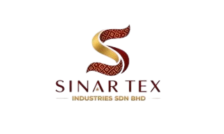
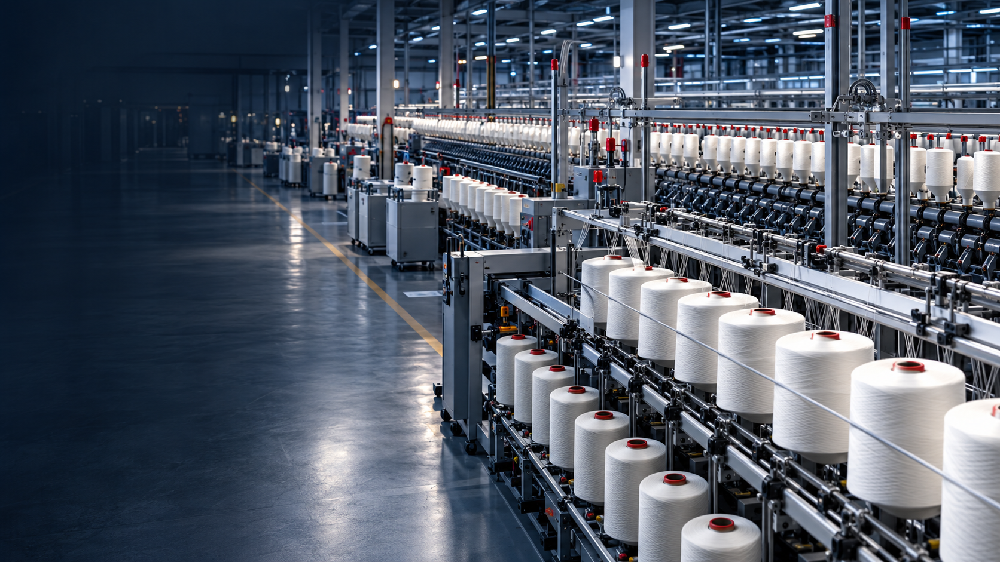

Precision Quality Control
Every batch undergoes tensile, hydrostatic, UV, and flame retardancy testing in our in-house laboratory. Official Certificate of Analysis provided with every commercial dispatch.

SINAR TEXINDUSTRIES Request a QuoteWHO WE ARE
A premier Malaysian manufacturer of high-performance industrial textiles, coated fabrics, and technical yarns for demanding B2B commercial applications.

OUR HERITAGE & CAPABILITY
A premier Malaysian manufacturer of high-performance industrial textiles, coated fabrics, and technical yarns for demanding B2B commercial applications.
Established with a focus on engineering precision, Sinar Tex Industries Sdn. Bhd. has built a reputation for reliable supply, technical consistency, and responsive customer service. Our manufacturing facility in Telok Panglima Garang, Selangor, is equipped with high-speed industrial weaving looms, knife-over-roll coating lines, thermal lamination systems, and comprehensive quality control laboratories.
We serve commercial converters, tarpaulin fabricators, outdoor gear manufacturers, and industrial suppliers across Malaysia and Southeast Asia, delivering customized fabric solutions engineered to exact tensile, hydrostatic, and environmental specifications.
THE SINAR TEX DIFFERENCE
Operational confidence, from first specification to ongoing supply.
Every batch undergoes tensile, hydrostatic, UV, and flame retardancy testing in our in-house laboratory. Official Certificate of Analysis provided with every commercial dispatch.
Disciplined production scheduling and strategic raw material inventory to honor committed delivery timelines even during peak demand seasons.
Tailored yarn counts, GSM weights, coating formulations, widths, and colors engineered to your exact technical B2B requirements.
Experienced in international commercial documentation, FOB Port Klang logistics, and full export compliance for Southeast Asian and global buyers.
Our engineering team assists with fabric construction selection, coating formulation, and performance testing appropriate for your application.
REACH-compliant chemistry, recycled selvage programs, and continuous energy efficiency upgrades across our production facility.
PARTNER WITH US
Connect with our technical spinning engineers to identify the ideal yarn profile for your application.
Request a Quote